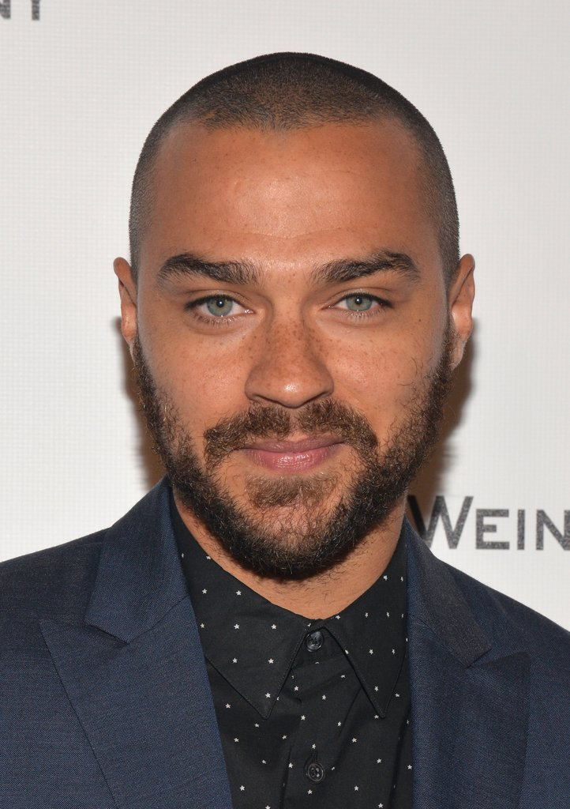
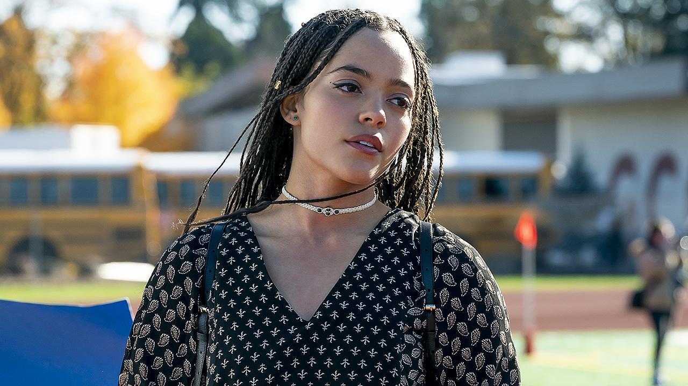

With a lot of us stuck indoors and keeping safe throughout Lockdown 2.0. We have had a lot of time to catch up on our favorite shows and movies. But fear not! Our binge watching has not gone to waste.
We have compiled a list of a bunch of actors that have stood out to us throughout the lockdown period and have even recommended some great shows for you to watch!
Here is a list of our favorite actors:

Jesse Williams
-
Hometown
Chicago, Illinois, United States -
Date of Birth
5th August, 1981 -
Fun Fact
Along with acting, Williams is a dedicated civil rights activist and humanitarian. In fact, he even won the Humanitarian Award at the BET Awards just a couple of years ago. He is dedicated to using his voice to enact change -
Fave Show
Grey's Anatomy. Click here to watch Grey's Anatomy. -
Description:
Grey's Anatomy A medical based drama centered around Meredith Grey, an aspiring surgeon and daughter of one of the best surgeons, Dr. Ellis Grey. Throughout the series, Meredith goes through professional and personal challenges along with fellow surgeons at Seattle Grace Hospital. -
TV Show Rating
Grey's Anatomy: ⭐ ⭐ ⭐ ⭐ ⭐ -
Actor's Rating
⭐ ⭐ ⭐ ⭐
Emma Roberts
-
Hometown
Rhinebeck, New York, United States -
Date of Birth
10th February, 1991 -
Fun Fact
Emma Roberts landed the first role she auditioned for, at the age of 10, starting in Blow with stars such as Johnny Depp -
Fave Show
An old but gold, Wild Child is one of those classic feel good chickflicks -
Description:
Wild Child features Emma Roberts, as Poppy Moore, a Malibu teenager who is sent to a boarding school in England. As the film continues we see the friendships, romance and drama that unfolds, ultimately changing her attitude, appereance and outlook. -
Film Rating
Wild Child: ⭐ ⭐ ⭐ ⭐ ⭐ -
Actor's Rating
⭐ ⭐ ⭐

Quintessa Swindell
-
Hometown
New York, United States -
Date of Birth
8th February, 1997 -
Fun Fact
Quintessa is a non-binary actor who uses they/them pronouns but often plays cis-women characters.
In 2019, they received their new California state ID which formally recognises their gender with 'X'! -
Fave Show
Trinkets
Click here to watch the trailer for Season 1.
Click here to watch the first season on Netlfix! -
Description
A coming of age series which focuses on three young women who meet through Shoplifters Anonymous. They bond over their struggles with stealing and form a secret friendship where they slowly reveal their personal lives to one another.
Content warning: there are scenes of intimate partner violence portrayed by Quintessa's character so if this may cause distress, watch with a trusted person and take regular breaks or give this series a miss! -
TV Show Rating
Trinkets ⭐ ⭐ ⭐ ⭐ ⭐ -
Actor's Rating
⭐ ⭐ ⭐ ⭐